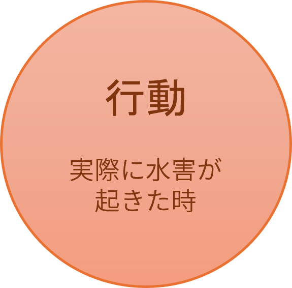
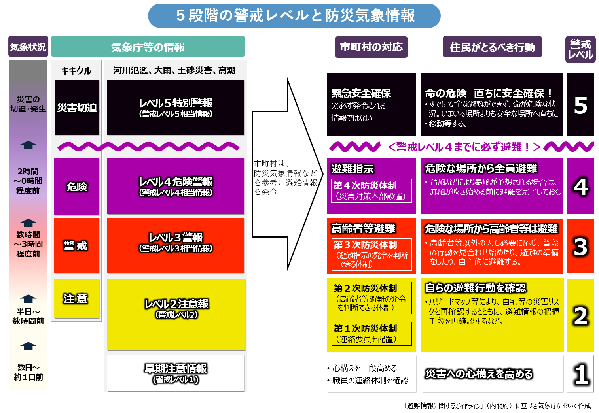
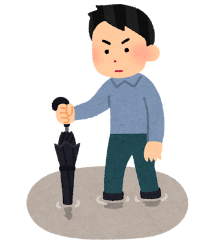

水害が起きた時・起きそうな時の「行動」
大雨や台風による浸水・土砂災害から、命を守るために段階を踏んで取るべきアクションです。
【警戒レベル3：高齢者等避難】避難の準備・早めの避難
- 避難に時間がかかる人は避難開始：高齢の方、乳幼児のいるご家庭、避難が難しい方はこの段階で避難所へ向かいます。
- 一般の人も避難の準備を終える：非常用持ち出し袋を手元に置き、いつでも動ける状態にします。
- ハザードマップで危険度を再確認：今いる場所が浸水想定エリアか、土砂災害警戒区域かをスマホで確認します。
【警戒レベル4：避難指示】全員、速やかに避難
- 対象地域の人は全員、避難所へ移動：市町村から避難指示が出たら、危険な場所から必ず立ち退き避難をしてください。
- 移動時の服装を整える：長ズボン、履き慣れたスニーカー（長靴は水が入って動けなくなるためNG）、両手が空くリュック。
- 戸締まりと対策をして出る：家のすべての窓とドアを閉め、1階の家電製品や貴重品はできるだけ2階へ移動させます。
【警戒レベル5：緊急安全確保】すでに手遅れ・命を守る最善の行動
- 外への避難は諦める：すでに道路が冠水している場合、外を歩くのは極めて危険です。
- 「垂直避難」を行う：近所の頑丈な建物の2階以上、または自宅の2階以上の「崖から一番離れた部屋」に移動します。

出展：気象庁
- 冠水した道路を歩かない：水深がひざ上（約50cm）まで達すると、大人は歩行困難になります。
- 足元を棒で確認しながら歩く：やむを得ず水の中を歩く時は、傘や杖などで地面を突き、マンホールや側溝のふたが外れていないか確認します。
- アンダーパス（地下道）を避ける：周囲より低くなっている道路や地下街は、一瞬で水が溜まるため絶対に近づきません。
- 川や用水路の様子を見に行かない：増水した川の様子を見に行くのは絶対にやめてください。一瞬で流される危険があります。
